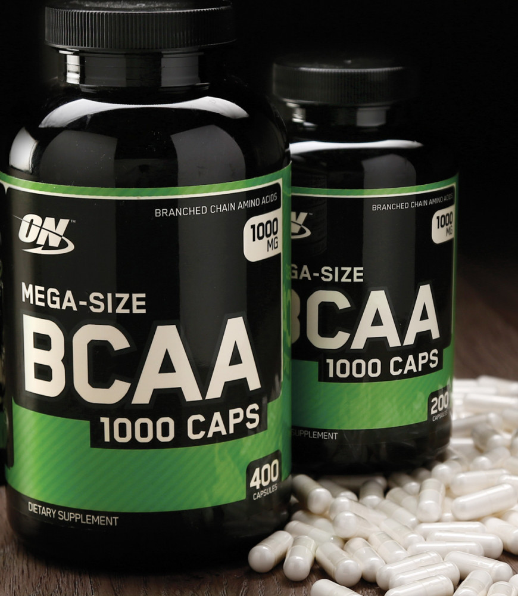
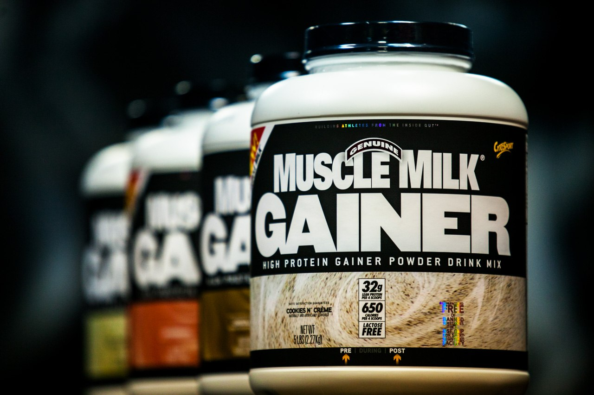
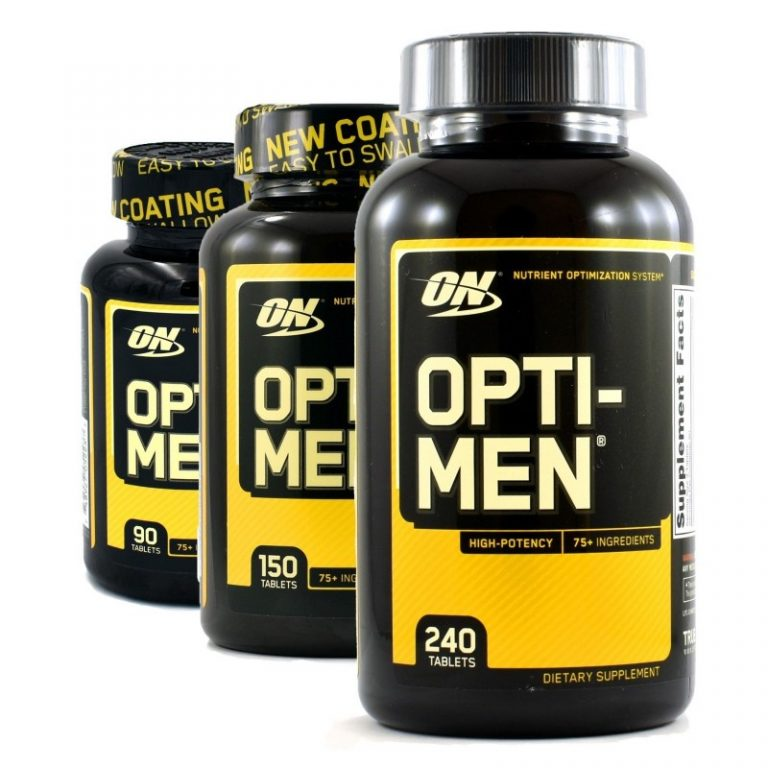

Протеин

Это спортивная добавка, которая сделана на основе белковых смесей. В пищеварительном тракте протеин расщепляется ферментами до аминокислот, которые всасываются в кровь и затем используются мышцами и другими тканями.
БЦАА
Основной материал для построения новых мышц, эти незаменимые аминокислоты составляют 35% всех аминокислот в мышцах и принимают важное участие в процессах анаболизма и восстановления, обладают антикатаболическим действием.
Гейнер
Класс спортивного питания, представляющий собой белково-углеводные смеси. Иногда производители добавляют креатин, витамины, микроэлементы, аминокислоты и пр. ингредиенты.
Витамины
Важнейшие органические соединения, которые регулируют процессы метаболизма, синтеза энергии, нервной проводимости, предотвращают разрушение клеток. Существует базовое разделение витаминов на жирорастворимые и водорастворимые.
Креатин

Азотсодержащая карбоновая кислота, которая участвует в энергетическом обмене в мышечных и нервных клетках. Является основным представителем группы эргогенных компонентов спортивного питания. Выпускается в различных химических формах(моногидрат, гидротатрат, альфа-кетоглутарат, трикреатина малат)
Креатин моногидрат это первая спортивная добавка такого рода, выпущенная для массовых продаж. Моногидрат — соединение, содержащее креатин и воду в пропорции 1:1.
Креатин гидрохлорид эта добавка появилась сравнительно недавно.Она активно рекламируется, как наиболее эффективная.
Креатин гидрохлорид применяют для увеличения энергозапаса при интенсивных физических нагрузках. В результате не возникают катаболические реакции, и повышается скорость роста мышц.